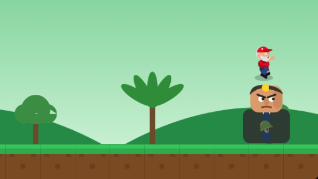
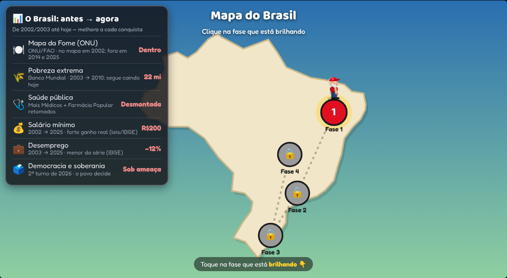

Um joguinho didático sobre as conquistas que transformaram o Brasil. Enfrente as forças do atraso e reconstrua o país! 🇧🇷
▶ JOGAR AGORAGrátis · joga no navegador · dá pra instalar como app 📲 · melhor com o celular deitado 🔄
Por que jogar
Cada fase conta uma conquista real das políticas públicas que mudaram a vida do povo brasileiro — com dados do IBGE e da ONU. É pra quem tem interesse em entender, de um jeito leve, o que foi feito e por quê.
Como é o jogo
Pule na cabeça das forças do atraso, junte votos, vire o Lula Fortão 💪 e enfrente o chefão no fim de cada fase.

